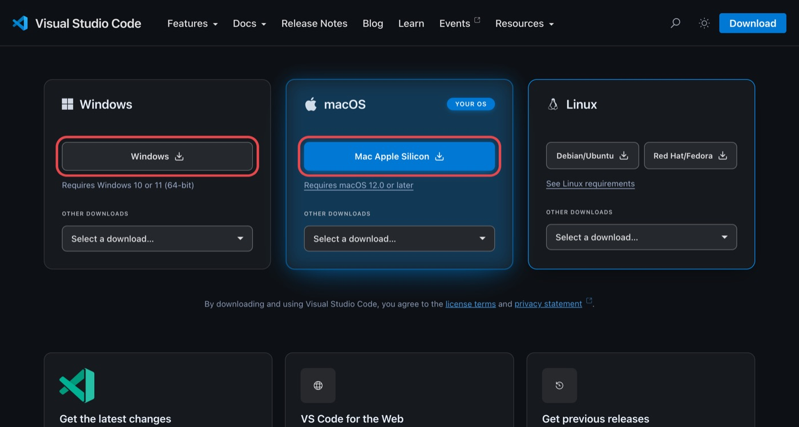
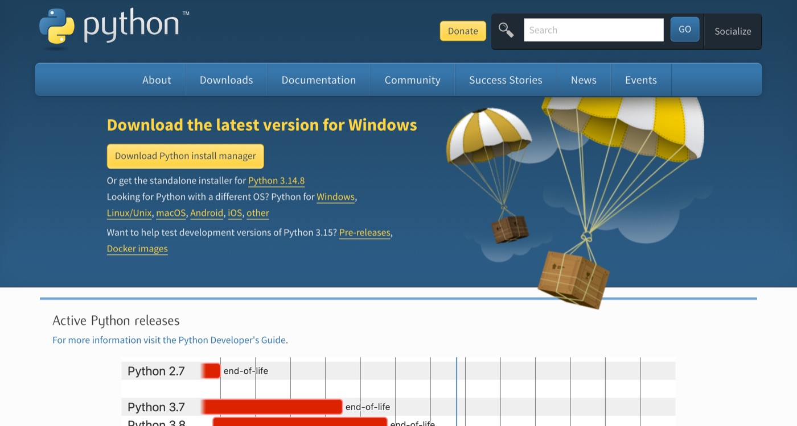
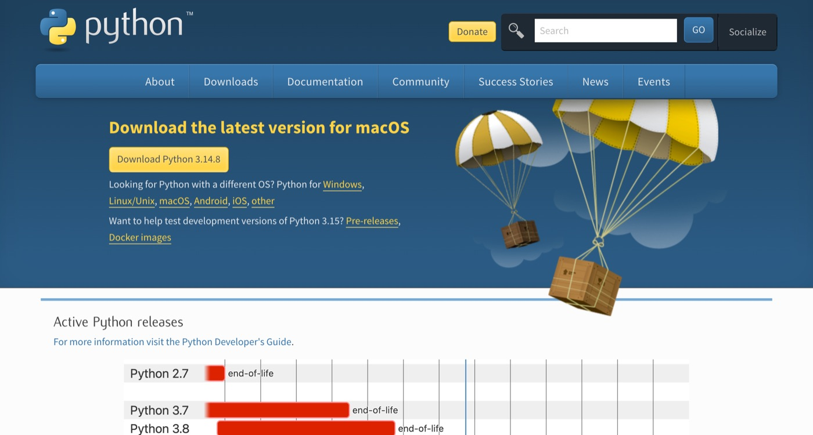
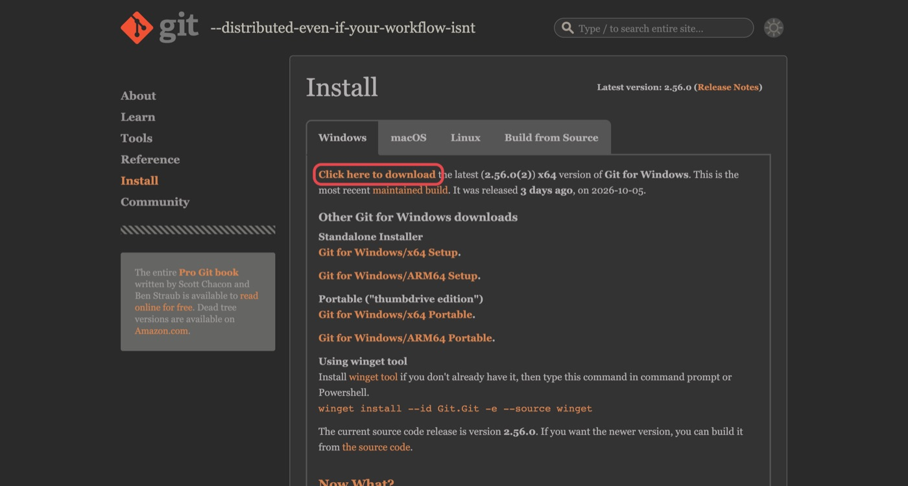

VS Code
a munkaasztalKódszerkesztő program. Ebben nyitod meg a projekt mappáját, itt olvasod és írod a fájlokat, és itt fut a terminál és az AI-asszisztens is.
Olyan, mint pl. a Word, csak programkódhoz és egész mappákhoz.
Otthoni feladat az első óra előtt
Ezen az oldalon segítek telepíteni azokat a programokat, amelyekkel a félév során dolgozunk. Minden lépésnél leírtam, mire kattints, és hogyan ellenőrizd, hogy sikerült.
Mielőtt bármit letöltesz
Öt dolgot telepítesz, de a félév során szinte mindig csak egy ablakot fogsz látni: a VS Code-ot. A többi program a háttérben dolgozik.
Kódszerkesztő program. Ebben nyitod meg a projekt mappáját, itt olvasod és írod a fájlokat, és itt fut a terminál és az AI-asszisztens is.
Olyan, mint pl. a Word, csak programkódhoz és egész mappákhoz.
A programozási nyelv, és a program, amely lefuttatja a Pythonban írt kódot. Nélküle egy .py fájl csak szöveg, nem csinál semmit.
Az Excelben a képlet csak akkor ad eredményt, ha az Excel kiszámolja. A Python a "kódot számolja ki".
Pillanatképeket ment a projekt mappájáról. Minden pillanatképhez (commit) egy rövid leírás tartozik, és bármelyikhez vissza lehet ugrani.
Olyan, mint a Wordben a változások követése/előző verziók, csak az egész mappára, és sosem veszik el.
Weboldal, ahol a Git-pillanatképek a neten is megvannak. Innen fogod beadni a projektet, itt dolgozhatsz együtt másokkal, és ezzel a fiókkal lépsz be a Copilotba.
Olyan, mint a Google Drive, csak Git-projektekhez.
A VS Code-ba épülő AI-asszisztens. Látja a projekt fájljait, akár magyarul is megkérheted, hogy írjon kódot vagy futtasson parancsot, és a félév során végig ezzel dolgozunk. A kódot ő írja, te pedig elolvasod és ellenőrzöd. Ehhez tanulunk csak annyi Pythont, amennyi kell.
Olyan, mint egy gyors, szorgalmas gyakornok. Hihetetlen sokat dolgozik, de az eredményét mindig át kell nézni.
main a Git-branchet, a Python 3.14 a használt Python verziót jelzi.Ezzel kezdd, mert a hallgatói igazolás elbírálása napokig is eltarthat.
Nyisd meg a github.com/signup oldalt, és add meg az e-mail-címed, egy jelszót és egy felhasználónevet.
github.com/tuboly-roland). Az e-mail-cím lehet a magáncímed. Az egyetemit a következő lépésben adod hozzá.Erősítsd meg az e-mail-címed (a GitHub kódot küld), majd kapcsold be a kétlépcsős azonosítást. A GitHub úgyis kérni fogja. Egy hitelesítő app kell hozzá a telefonodra (pl. Google Authenticator vagy Microsoft Authenticator).
A profilodban (Settings → Public profile) írd be a teljes neved úgy, ahogy a diákigazolványodon szerepel. Az Emails oldalon add hozzá és erősítsd meg az egyetemi e-mail-címed is.
Nyisd meg a github.com/settings/education/benefits oldalt, kattints a Start an application gombra, válaszd a Student lehetőséget, és keresd ki az egyetemedet (ELTE).
Igazolásként tölts fel egy fényképet az érvényes diákigazolványodról, vagy a Neptunból letöltött hallgatói jogviszony-igazolásról. Mindkettőn látszódjon a neved, az egyetem neve és az aktuális félév.
Megvan a fiók, és beküldted a kérelmet?
A munkaasztal. Ezt telepítjük másodikként, mert a Python és a Git ellenőrzéséhez már a VS Code beépített terminálját használjuk.
Nyisd meg a code.visualstudio.com/download oldalt, és töltsd le a gépednek megfelelő változatot.

Futtasd a letöltött VSCodeUserSetup-….exe fájlt. Fogadd el a licencet, a következő képernyőkön maradhat minden alapértelmezett, kivéve az Additional Tasks oldalt. Ott pipáld be ezt a hármat:
Így egy mappára jobb gombbal kattintva közvetlenül megnyithatod a VS Code-ban.
Nyisd meg a letöltött ZIP-fájlt (ha a Safari nem csomagolta ki magától), és a Visual Studio Code alkalmazást húzd át a Finderben az Alkalmazások (Applications) mappába. Ezután onnan indítsd el. Az első indításnál a macOS megkérdezi, biztosan megnyitod-e: Megnyitás.
A VS Code-ban nyomd meg a ⌘ ⇧ P billentyűket. Ez a command palette, a VS Code „mindent-kereső” mezője. Írd be, hogy shell command, és válaszd az Install 'code' command in PATH sort.
Lehet hogy hozzáférést/jelszót fog kérni, ezeket add meg/írd be, majd telepítsd a Python-bővítményt. Bal oldalt a függőleges menüsorban kattints a négy kis négyzetből álló Extensions ikonra (vagy Ctrl⌘ ⇧ X), keresd meg a Python bővítményt, és kattints az Install gombra annál, amelyiknek a kiadója a Microsoft (kék pipa jelzi).
Ugyanígy keresd meg és telepítsd a Jupyter bővítményt is, szintén a Microsoft kiadótól. Ezzel tudod majd megnyitni és futtatni a kurzus notebookjait (.ipynb fájlok).
Elindul a VS Code, és látod a bal oldalt a Python- és a Jupyter-bővítményt az Extensions listában?
A motor. A hivatalos python.org oldalról telepítjük. Ha valahol már van Pythonod (pl. Anaconda), az sem baj, de a kurzushoz telepítsd ezt is kérlek.
A python.org/downloads oldalon kattints a sárga Download Python install manager gombra.

Nyisd meg a letöltött python-manager-….msix fájlt, és kattints az Install (Telepítés) gombra. Ez a Python-telepítő segédprogramját teszi fel, magát a Pythont a következő lépésben töltjük le.
Indítsd újra a VS Code-ot, és nyiss egy terminált: felső menü Terminal → New Terminal (vagy Ctrl `). Alul megjelenik egy sor, ami PS C:\Users\…> kezdetű. Ide gépeld be, majd nyomj Entert:
py install 3.14Ha a terminál kérdez valamit (például hogy felvegye-e a parancsokat a PATH-ba), írj y-t, és nyomj Entert.
Zárd be a terminált (a kuka ikonnal a jobb oldalán), nyiss egy újat, és ellenőrizd:
python --version
Python 3.14.8A python.org/downloads oldalon kattints a sárga Download Python 3.14.x gombra. Egy .pkg fájlt kapsz.

Nyisd meg a .pkg fájlt, és kattints végig: Folytatás → Elfogadom → Telepítés. A gép jelszavát kérni fogja.
Ezt ne hagyd ki: a telepítés végén megnyílik egy Finder-ablak (Alkalmazások/Python 3.14). Kattints duplán az Install Certificates.command fájlra. Felugrik egy terminálablak, és ha a végén azt látod, hogy update complete, bezárhatod.
CERTIFICATE_VERIFY_FAILED hibát kapsz.Indítsd újra a VS Code-ot, nyiss terminált (a fenti menüsorban Terminal → New Terminal, vagy ⌃ `), és ellenőrizd:
python3 --version
Python 3.14.8python3, nem python a parancs alapból. Ez így normális amúgy, de a kurzus projektjeiben később saját környezetet hozunk létre, ott már a python is működni fog.3.12-es vagy újabb verziót ír ki a parancs?
A verziókövető. Ennek nincs saját ablaka vagy alkalmazása: a terminálból és a VS Code-ból használjuk csak.
A git-scm.com/install/windows oldalon kattints a Click here to download linkre.

Futtasd a Git-….exe telepítőt. Sok kérdést tesz fel, majdnem mindenhol jó a Next. Két képernyőn változtass:
main.A végén Install, majd Finish.
Indítsd újra a VS Code-ot, és add meg a Gitnek a neved és az e-mail-címed. Ezek kerülnek majd minden pillanatképre (commitra). Az idézőjelek közé a sajátodat írd, és használd ugyanazt az e-mail-címet, amivel a GitHubra regisztráltál (én a personalt ajánlom, nem a sulisat):
git config --global user.name "Tuboly Roland"
git config --global user.email "tuboly.roland.levente@gmail.com"Ellenőrzés:
git --version
git version 2.56.0A Macen a Git az Apple fejlesztői eszközeivel együtt jön. A VS Code termináljába írd be:
git --versionHa még nincs telepítve, felugrik egy ablak, ami a command line developer tools telepítését ajánlja. Kattints a Telepítés gombra (nem a „Beszerzés Xcode”-ra). Ez 5–15 perc. Ha viszont egy verziószámot ír ki, a Git már megvan.
Indítsd újra a VS Code-ot, és add meg a Gitnek a neved és az e-mail-címed. Ezek kerülnek majd minden pillanatképre (commitra). Az idézőjelek közé a sajátodat írd, és használd ugyanazt az e-mail-címet, amivel a GitHubra regisztráltál (én a personalt ajánlom, nem a sulisat):
git config --global user.name "Tuboly Roland"
git config --global user.email "tuboly.roland.levente@gmail.com"Ellenőrzés:
git --version
git version 2.56.0Kiírja a git --version a verziót?
Az AI-asszisztens. A Copilot már benne van a VS Code-ban, csak be kell jelentkezni a GitHub-fiókoddal.
A VS Code alsó, színes státuszsorának jobb szélén keresd meg a Copilot kis ikonját (pilóta-szemüveget viselő robotarc). Vidd fölé az egeret, és kattints a Use AI Features gombra. Ha nem találod, nyisd meg a csevegőablakot: CtrlAltI⌃⌘I.
Válaszd a Sign in with GitHub lehetőséget. Megnyílik a böngésző, ott lépj be, és engedélyezd a VS Code-nak a hozzáférést (Authorize). Ha a böngésző megkérdezi, hogy megnyithatja-e a VS Code-ot, engedd.
Próbáld ki! A csevegőablak alján lévő mezőbe írd be ezt:
Szia! Egy mondatban: mi a különbség a Python és a VS Code között?Ha magyarul válaszol, működik.
Válaszolt a Copilot?
Ne higgy nekem, ellenőrizd te magad hogy minden működik-e. Ez a rövid script megnézi, hogy minden a helyén van-e. A kurzuson is így dolgozunk majd: nem az számít, hogy valami működőnek tűnik, hanem hogy egy ellenőrző program szerint is jó-e.
Hozz létre egy új mappát, például a Dokumentumok között, ai-kurzus néven. A VS Code-ban a felső menüsorban File → Open Folder…, és válaszd ki ezt a mappát. Ha megkérdezi, megbízol-e a mappa szerzőiben: Yes, I trust the authors.
Bal oldalt, a mappa neve mellett kattints a New File… ikonra (lehajtott csücskű A4-es lap egy + jellel), és nevezd el így: gepcsekk.py. Másold bele ezt a kódot alább, és mentsd el (Ctrl⌘ S):
"""Gépcsekk az első órára: megnézi, hogy a Python, a Git és a netkapcsolat rendben van-e."""
import platform
import shutil
import ssl
import subprocess
import sys
import urllib.error
import urllib.request
eredmenyek = []
def ellenoriz(nev, sikerult, tipp=""):
"""Kiír egy RENDBEN/HIBA sort, és megjegyzi az eredményt."""
eredmenyek.append(sikerult)
if sikerult:
print(f"RENDBEN {nev}")
else:
print(f"HIBA {nev}\n -> {tipp}")
ellenoriz(
f"Python {platform.python_version()}",
sys.version_info >= (3, 12),
"Régi a Python. Telepítsd a legújabbat a python.org-ról.",
)
git = shutil.which("git")
ellenoriz("Git telepítve", git is not None,
"Nem találom a gitet. Telepítsd, aztán indítsd újra a VS Code-ot.")
if git:
for kulcs, magyarul in [("user.name", "név"), ("user.email", "e-mail")]:
ertek = subprocess.run([git, "config", "--global", kulcs],
capture_output=True, text=True).stdout.strip()
ellenoriz(f"Git-{magyarul}: {ertek or '(nincs beállítva)'}", bool(ertek),
f'Futtasd a terminálban: git config --global {kulcs} "..."')
# A python.org-os macOS-Python tanúsítványok nélkül érkezik; ez itt derül ki.
try:
urllib.request.urlopen("https://www.python.org", timeout=10)
ellenoriz("HTTPS-kapcsolat", True)
except urllib.error.URLError as hiba:
if isinstance(hiba.reason, ssl.SSLCertVerificationError):
tipp = ("Macen: Finder > Alkalmazások > Python 3.14 mappa, "
"dupla katt az Install Certificates.command fájlra.")
else:
tipp = f"Nincs internet, vagy tűzfal blokkolja. ({hiba.reason})"
ellenoriz("HTTPS-kapcsolat", False, tipp)
print()
if all(eredmenyek):
print("Minden RENDBEN. Készen állsz az első órára!")
else:
print("Van HIBA. Kövesd a tippet, vagy hozd el így az órára, megoldjuk ott.")Futtasd: kattints a szerkesztő jobb felső sarkában lévő ▷ (Run Python File) gombra. Alul, a terminálban ezt kell látnod:
RENDBEN Python 3.14.8
RENDBEN Git telepítve
RENDBEN Git-név: Tuboly Roland
RENDBEN Git-e-mail: tuboly.roland.levente@gmail.com
RENDBEN HTTPS-kapcsolat
Minden RENDBEN. Készen állsz az első órára!Ha valahol HIBA áll, a sor alatt ott a tipp, mit csinálj. Ha nem megy, semmi gond: hozd el a laptopod így, és az óra elején megoldjuk.
Mindenhol RENDBEN?
Ráér az első óra után, a 2. alkalomig
A 2. alkalomtól a notebookokban Pythonból hívunk nyelvi modellt. A kurzus alapbeállítása egy olyan modell, amely a saját gépeden fut: ingyenes, nem kell hozzá kulcs, és amit kérdezel tőle, nem hagyja el a gépet. Ezt a modellt az Ollama nevű program futtatja. Ha a kurzusra lesz intézményi API-kulcs, ezt a lépést kihagyhatod. Erről az első órán szólok.
Az ollama.com/download/windows oldalon töltsd le az OllamaSetup.exe fájlt, futtasd, és kattints az Install gombra. Rendszergazdai jog nem kell hozzá.
Az ollama.com/download/mac oldalon töltsd le az Ollama.dmg fájlt, nyisd meg, és az Ollama alkalmazást húzd át az Alkalmazások mappába. Onnan indítsd el. Ha az első indításkor felajánlja a parancssori eszköz telepítését, engedd.
Az Ollama ezután a háttérben fut. Egy kis láma ikon jelzi a tálca jobb széléna felső menüsorban. Indítsd újra a VS Code-ot, és a terminálban töltsd le a két modellt:
ollama pull gemma4:e4b
ollama pull bge-m3Az első a nyelvi modell (6,6 GB, a Google Gemma 4 kis változata). A második a szövegeket számsorokká (vektorokká) alakítja, erre a 3. alkalomtól, a dokumentumkeresőhöz lesz szükség (1,2 GB). A letöltés a nettől függően 5–30 perc.
Próbáld ki:
ollama run gemma4:e4b "Egy mondatban: mi az infláció?"Ha magyarul válaszol, működik. Az első válasz akár egy percig is tarthat, mert a modellt ilyenkor tölti be a memóriába. A modell válasz előtt „gondolkodik”, ezért a további válaszok is 10–30 másodpercig tartanak. Ez a saját gépen futó modelleknél normális.
Opcionális, csak ha már van előfizetésed
Az Anthropic AI-asszisztense, amely a Copilothoz hasonlóan a VS Code-ban is tud dolgozni. A kurzus elvégzéséhez nincs rá szükség, és nem kell miatta előfizetni. Ha viszont már van fizetős Claude-előfizetésed (Pro vagy Max), használhatod a Copilot mellett.
A VS Code-ban nyisd meg az Extensions nézetet (Ctrl⌘ ⇧ X), keresd meg a Claude Code bővítményt (kiadó: Anthropic), és telepítsd.
A szerkesztő jobb felső sarkában megjelenik egy kis csillag-szikra ikon. Kattints rá, majd a böngészőben lépj be a Claude-fiókoddal.
Ha a terminálban is használni szeretnéd (ez meg aztán egyáltalán nem kötelező), telepítsd a parancssori változatot is:
irm https://claude.ai/install.ps1 | iexcurl -fsSL https://claude.ai/install.sh | bashEz a PowerShell-parancs, a VS Code terminálja alapból PowerShell.
AGENTS.md fájlját olvassa, a Claude Code a CLAUDE.md-t. A kurzus sablonjaiban mindkettő benne van, és ugyanazt mondják, így mindegy, melyik asszisztenst használod.Ha elakadsz
A legtöbb probléma a lenti hibák egyike. Ha egyik sem az, készíts képernyőképet a hibaüzenetről, és küldd el nekem, vagy mutasd meg az első óra előtt/elején.
A Windowsnak van egy beépített „python” parancsa, ami a Store-ba irányít, és ez elfedheti az igazit.
Megoldás: Start menü → írd be: alkalmazás-végrehajtási aliasok (angolul: Manage app execution aliases). A listában keresd meg a Python-sorokat: a Python install manager és a Python (default) legyen bekapcsolva, a sima „App Installer · python.exe” ki. Utána zárd be és nyisd meg újra a VS Code-ot.
A terminál csak indításkor nézi meg, milyen programok vannak a gépen. Ha telepítés előtt nyitottad meg, nem tud az újról.
Megoldás: zárd be teljesen a VS Code-ot, és nyisd meg újra. Ha még mindig nem megy, indítsd újra a gépet.
A python.org-os Python Macen tanúsítványok nélkül érkezik, ezért nem tud biztonságos (https) kapcsolatot nyitni.
Megoldás: Finder → Alkalmazások → Python 3.14 mappa → dupla kattintás az Install Certificates.command fájlra.
Macen a parancs neve python3. A python a kurzus saját projektkörnyezeteiben fog működni, ezt az első órán állítjuk be.
A PowerShell alapból tiltja a scriptek futtatását. A Claude Code telepítőjénél vagy az első órán a saját környezet bekapcsolásánál jöhet elő.
Megoldás: futtasd ezt egyszer a terminálban, majd nyiss új terminált:
Set-ExecutionPolicy -Scope CurrentUser RemoteSignedFrissítsd a VS Code-ot (bal alul fogaskerék → Check for Updates…), és indítsd újra. Ha a böngészőben sikeres volt a belépés, de a VS Code nem tud róla, a felugró ablakban válaszd a Megnyitás a Visual Studio Code-ban lehetőséget.
Nem gond, újra lehet próbálni. A leggyakoribb okok: elmosódott vagy levágott fotó, VPN, kikapcsolt helymeghatározás, vagy eltérő név a GitHub-profilban és az igazoláson. Javítsd ki, és küldd be újra. A kurzus a Copilot Free csomaggal is elindul.
Az Ollamának futnia kell a háttérben, különben sem a terminál, sem a notebook nem éri el.
Megoldás: indítsd el az Ollama alkalmazást (a láma ikonnak meg kell jelennie), majd zárd be és nyisd meg újra a VS Code-ot. Ha a parancsot továbbra sem találja, indítsd újra a gépet.
Valószínűleg nem. A Copilot nem a te gépeden fut, hanem a szolgáltató szerverein. Az első órához Windows 10/11 vagy macOS 12+ kell, és nagyjából 3 GB szabad hely.
A helyi nyelvi modellhez (Ollama) ennél erősebb gép kell: kb. 8 GB szabad hely és legalább 8 GB memória. Ha ez nincs meg, a modellt online szolgáltatón keresztül érjük el.
Szótár
python --version. Enterrel futtatod..py fájl, amit a Python elejétől a végéig lefuttat (lehet más kiterjesztés is, a .py egy Python-script).Az első alkalomra